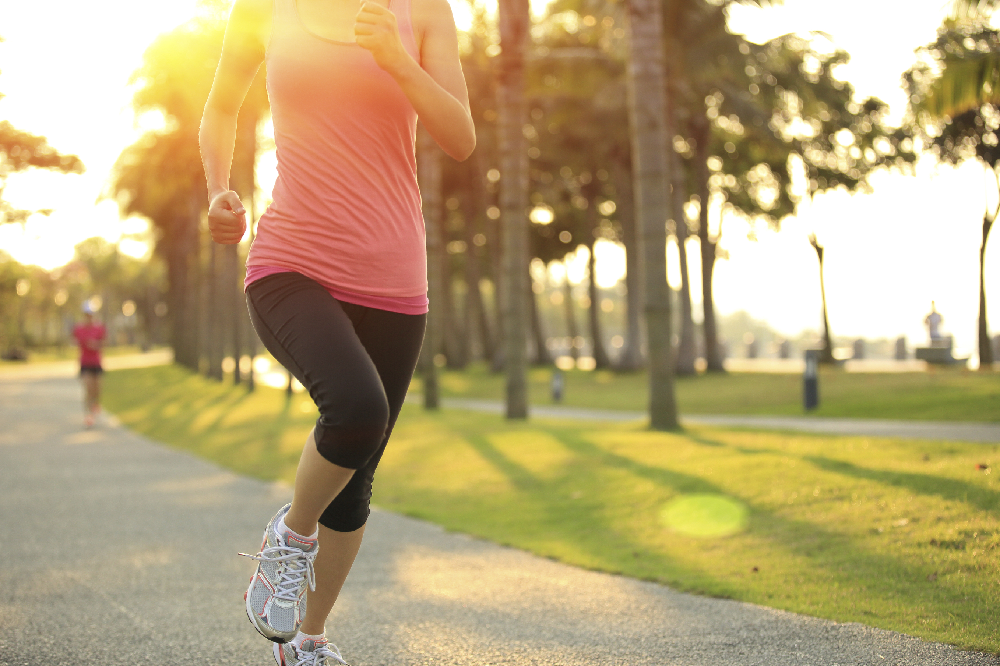

Стало известно, что полезнее: бег на дорожке и на улице
 Новости Украины - From-UA расширенный поиск Политика Экономика Общество В мире Технологии Криминал Здоровье Культура Путешествия Спорт Статьи Новости Мнения Интервью Обзор прессы Экспертизы Фото Видео Спецпроекты Обратная связь RSS-Лента Telegram-канал Мы в Facebook
В фокусе
После выборов украинцев ждет коммунальный ад? Защищать инвестиции в Офисе Генпрокурора будет известный «конвертатор», «смотрящий» за контрабандой и финпотоками Александр Ватутин Жить и побеждать. Как Киев и Бухарест решили «проблему третьего флага» на Дунае Провокация Корбана вокруг «клона Филатова» в Днепре не прокатила Куда пропадают бездомные украинцы?Предложения партнеров
Опрос
Спецпроекты
Украина в 2020 году: самые интересные прогнозы
Украинцы 1991-2017
Новости
Стало известно, что полезнее: бег на дорожке и на улице
23.08.2020 05:49 Что говорят врачи?Во время недавней самоизоляции многие задумались о приобретении беговых дорожек. Сейчас, когда ограничения сняли, возник закономерный вопрос: есть ли существенная разница в беговых тренировках дома и на улице?
Портал Wday решил в этом разобраться вместе со специалистом исполнительным директором Лиги содействия развитию подиатрии, тренером по оздоровительному фитнесу Ольгой Чижевской.
Международная группа исследователей, возглавляемая Джоэлом Фуллером из Университета Маккуори (Австралия), попыталась найти ответ на этот вопрос, объединив результаты 34 исследований с участием в общей сложности 468 участников.
Основной вывод: бег это бег. И ожидать колоссальной разницы было бы неправильно. А если вы чувствуете иначе, проверьте калибровку ремня беговой дорожки.
Однако некоторые различия все-таки существуют
1. Отсутствие сопротивления воздуха (ветра)
Еще в 1996 году американские специалисты опубликовали статью, в которой сравнивали потребление энергии при беге на открытом воздухе и на беговой дорожке. Тренировка на беговой дорожке сжигала примерно на 4% меньше энергии. Однако опытным путем удалось установить, что эту разницу легко устранить увеличением наклона дорожки на 1%.
2. Стрессовая нагрузка
Частые травмы при беге так называемые усталостные травмы. Они происходят вследствие изнашивания мышц, хрящей, сухожилий с течением времени при однотипной нагрузке. Специалисты физической медицины и реабилитации в Гарвардской медицинской школе, изучавшие различия между бегом на беговой дорожке и бегом на земле, предположили, что усталостные травмы случаются чаще, когда вы повторяете одно и то же беговое движение тысячи и тысячи раз на плоской твердой поверхности тренажера. При этом неизбежные неровности пересеченной местности при беге на улице, по грунту, асфальту или траве снижают вероятность перегрузок в одном и том же месте.
3. Отличия в биомеханике
Согласитесь, есть разница в том, совершаете ли вы пробежку на улице, ускоряясь всем телом, или ускоряется полотно беговой дорожки под вами. Специалисты отмечают, что при беге на тренажере увеличивается каденс (частота, с которой человек касается поверхности во время бега). При этом соответственно сокращается фаза полета и немного снижается ударная нагрузка на суставы.
4. Психологический фактор и погодные условия
Время, проведенное на свежем воздухе, особенно на природе, приносит очевидную пользу: тут и позитивный настрой, и повышение качества сна все не перечислишь.
Не обошлось и без практических исследований, на сей раз от британских университетов Эксетера и Эссекса. Испытуемые, бегавшие в зонах зеленых насаждений, сообщали о большем чувстве благополучия, а также снижении напряжения, замешательства, гнева. Однако, вне всяких сомнений, испытания проводились в солнечные дни.
Так что плюсы беговой дорожки перевешивают лишь в том случае, когда на улице шторм, ураган и снежные заносы. Тогда тренажер минимизирует риски и позволяет не отказываться от активного образа жизни.
Риски, одинаковые для любых беговых тренировок
Что общего у свежеиспеченных марафонцев, стайеров, любителей беговой дорожки или даже интенсивной ходьбы? Их объединяет то, что все они… индивидуальны. Каждый человек имеет свой паттерн (рисунок) бега. Стопа (уникальный механизм из 31 сустава) совершает движения, определенные ее индивидуальной биомеханикой. При этом не всегда она оптимальна. Вот почему начинающим бегунам так важно предварительно протестировать особенности своего опорно-двигательного аппарата у спортивного врача или подиатра (специалист по стопе).
При наличии погрешностей врач сможет скорректировать их ортезами стопы. Важный момент: салонные или аптечные ортопедические стельки тут не помощник. Восстановить физиологически естественное распределение нагрузки на стопу помогают индивидуальные ортезы, изготовленные под анатомические особенности конкретного человека.
Пока дождливая осень и зима не застали нас врасплох, пользуйтесь случаем совершайте пробежки в парке, сквере, на природе. А вместо музыки в наушниках слушайте трели птиц. В этом году их особенно много даже в черте города. Бегом марш, навстречу отличному настроению!
Только экстренная и самая важная информация на нашем Telegram-каналеверсия для печати Твитнуть × Заметили ошибку? выделите ее и нажмите Ctrl+Enter
Полезное
Главное
Москва «спрыгнула с иглы»: в РФ сделали громкое заявление касательно поставок из Украины Рада выбрала ЗОЖ: нардепы приняли за основу важный законопроект Эксперт объяснил, почему запрет погранслужбы на въезд иностранцев в Украину - это уголовно наказуемое преступление В Польше прошли новые задержания по делу Новака Адвокат: В Украине правосудие хромает. Оно хорошее, но...Новости
14:42 Председатель партии "Голос" получила положительный тест на COVID-19 14:37 Москва «спрыгнула с иглы»: в РФ сделали громкое заявление касательно поставок из Украины 14:29 Украина имеет амбиции возглавить Организацию черноморского экономического сотрудничества 14:27 Рада выбрала ЗОЖ: нардепы приняли за основу важный законопроект 14:17 Вирусолог рассказала, когда Украина вернется к прежней жизни 14:07 Турция заявила о готовности поддержать Азербайджан на поле боя 13:57 Соседи Украины опять занялись Союзным государством 13:37 Названы имена 18 кандидатов на пост мэра Одессы 13:29 «Голову долго не могли найти». В киевском метро погиб «зацепер»: жуткие подробности. ВИДЕО 13:27 В Польше прошли новые задержания по делу Новака 13:17 Госдолг Украины в августе существенно снизился 13:00 Достаточно 15 минут. ВОЗ объявила о создании коронавирусного супертеста: подробности 13:00 Адвокат: В Украине правосудие хромает. Оно хорошее, но... 12:57 ЧП в зоне ООС: в Золотом-5 на мине подорвались женщина с ребенком 12:47 Жителям Европы крупно не повезло: цены на газ взлетели до максимума в 2020 году 12:38 КСУ не смог провести заседание по рассмотрению закона о рынке земли: названа причина 12:17 В Киеве резко возросло количество жертв COVID-19 12:07 В Нагорном Карабахе начали гибнуть мирные жители 11:47 Обнародованы правила въезда в Украину для иностранцев: что важно знать 11:39 Американские врачи заметили еще одно неприятное последствие у переболевших COVID Видео Фото Таксист спас протестующего в Минске от дубинок ОМОНа. ВИДЕО У мережі показали чималу резиденцію Венедіктової. ВІДЕО В Чернобыльскую зону впервые за 100 лет вернулись медведи ВИДЕО Жах! На стадіоні школярі з вчителем знайшли ногу живої людини ВІДЕО Стыд и срам: ВИДЕО интимных утех молодой пары на дамбе в Кременчуге опубликовали в сети "Динамо" победило "АЗ" и вышло в плей-офф квалификации Лиги чемпионов ФОТО Украинская ведущая устроила ДТП на Бали ФОТО Силовики хотели задержать депутата, штурмуя офис "Свободы" ФОТО В Умані хасида жорстоко побили в магазині ФОТО Командування ЗСУ готується до масштабних стратегічних командних навчань ФОТО Новости Украины - From-UA © 2004-2020 From-UAНовости Украины
Все права защищены
Редакция не несет ответственности за содержание рекламных баннеров Политика Экономика Общество В мире Технологии Криминал Здоровье Культура Путешествия Спорт Перепечатка, копирование или воспроизведение информации, содержащей ссылку на агентство УНІАН, в каком-либо виде запрещено